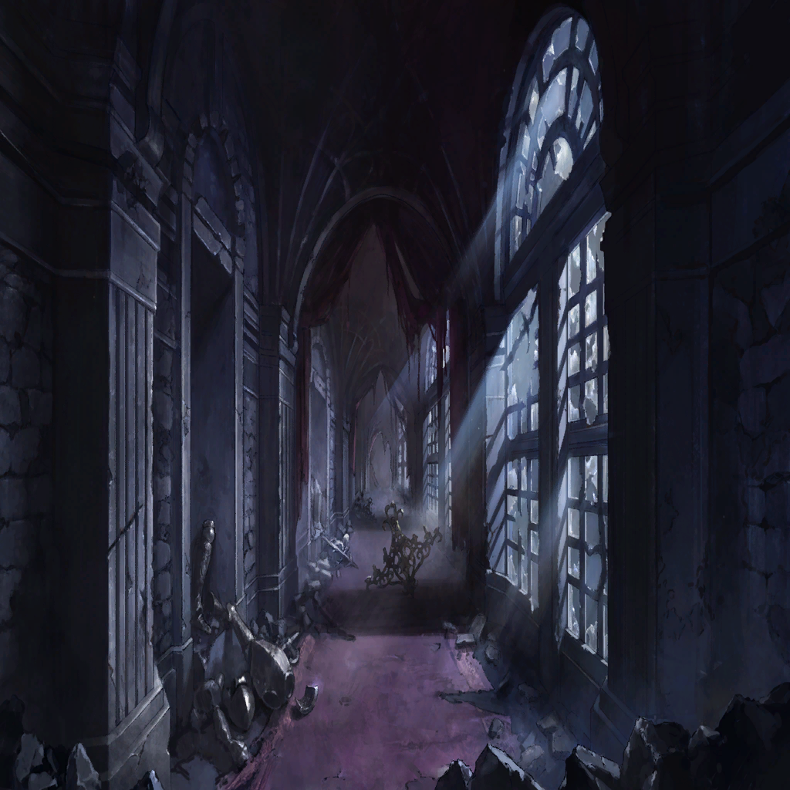
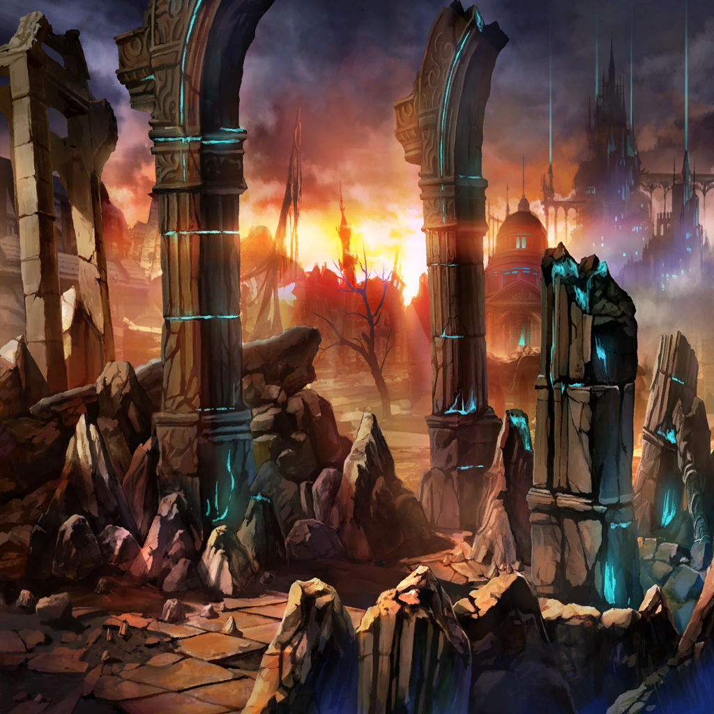
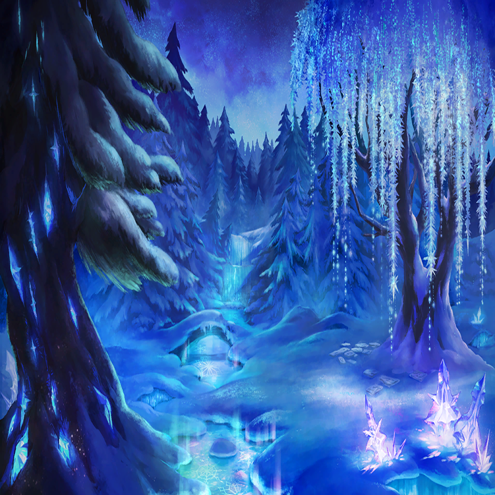

Letitia


| |
| |
| You did nothing wrong. You killed no one. Anyone would consider you innocent. | |
| Thus you cannot help but blame those who have done wrong or aim to exterminate them the minute you see them. | |
| You are pure and your enemies are vile. Therefore, anyone who stands against you is a target fit to be killed. | |
| But then, what happens when that target's blood splashes back upon you, staining you for all time? | |
| Perhaps those around you who could be considered pure might see those bloodstains and revile you. | |
| "You have killed," they might say. "That is a crime deserving of death." | |
| Even though you have done no wrong, only sought to eliminate those who have. | |
| So you considered fighting evil some other way. | |
| Ainanna | You take a break. |
| Ephylinde | Beds of Ice?! |
| Ainanna | Painless, fair, gentle, and humane... At least, it has always been considered to be. |
| Ainanna | As far as punishment of the high elves go, at least. |
| Ephylinde | What?! |
|  | |
| Ainanna | Dark elves are forged by murdering their fellow high elves, are they not? |
| Ainanna | They are transformed by the blood, Alchemia, and souls of the high elves they kill, marking their bodies with the evil deed they have done. |
| Ainanna | That's why high elves could not easily devise a way to execute those high elves who committed grave sins. |
| Ainanna | The executioner would become a dark elf, you see. It wouldn't be fair. |
| |
| Ainanna | Thus they adopted the Beds of Ice as the preferred method of execution. |
| Ainanna | It is a penalty of eternal sleep induced by Phantom Arts. |
| Ainanna | The bodies are stored here in this basement where the sleeping herbs grow to ensure eternal slumber. |
| |
| Ainanna | So beautifully. |
| "In particular, without ********** *** *** ** ******* ****** **** *****, only the infliction of ******* ******* can allow for * ****** ***** **** *********..." | |
| Ephylinde | That inscription! It was...! |
| "In particular, without committing the sin of killing fellow high elves, only the infliction of eternal slumber can allow for a nation built upon integrity." | |
| "For high elves are long-lived and methods of punishment such as imprisonment and other common forms are not very effective." | |
| "Without an effective deterrent to crime, the land grew ever more lawless, until the invention of the Beds of Ice." | |
| Ephylinde | But then... Why did everyone disappear? |
| Ainanna | Are you asking me, your own pupil? |
| Ephylinde | Why?! |
| Ainanna | Have you no idea at all, having lived alongside us...? |
| Ephylinde | What...? |
| Ainanna | Those who attack with the confidence that they are doing nothing wrong, are in fact the ones in the wrong... |
| Ainanna | But if they acknowledge that they have done wrong, they become painted as evil. So they fight harder in order to paint their opponents as the evil ones. |
| Ephylinde | But that's... |
| Ainanna | It's just as you dreamed it. |
| Ephylinde | ... |
|  | |
| Ephylinde | When those who do not age pursue a noble existence, the longer they endure, the more they hold corruption in contempt. |
| Ephylinde | It became clear to me that I was no different from those foolish high elves, so taken with their own egos. |
| Ephylinde | Unable to forge bonds with others... |
Letitia |
The longer one lives, the more apparent it becomes that their own race is just as corrupted as the others. The more polished their opponent on the surface, the more clearly they see themselves reflected. |
| |
| Ainanna | Papa said that those who did wrong had to be made examples of. |
| Ainanna | He said that was the best way to show others that they shouldn't do the same things, that they shouldn't do wrong. |
| Ainanna | As we grow desensitized to large stains upon our souls, we begin to focus on the small ones, growing overly sensitive to the pettiest of stains. |
| Ainanna | The Beds of Ice began to be used to punish ever pettier sins. |
| Ainanna | Luxury, pleasure, abundance, illness, lust... All these and more became considered corrupting sins. |
| Ainanna | Those who strayed even slightly from the status quo were sentenced to execution. |
| Ainanna | As people were sentenced to execution with increasing frequency, the call came for the upper classes and royalty to be subject to the same punishment in the name of equality. |
| Ainanna | After all, the people love a good show. |
| Ainanna | Apparently, such a show was the height of entertainment to high elves grown tired of tedious centuries upon centuries. |
| Ainanna | Extinguishing the corruption of others without hesitation started to cause them to then question their own purity, wondering if they themselves should not be executed... |
| Ainanna | Until the only one left was a young queen too green to know the difference between right and wrong. A triumph of better nature. A happily ever after... |
| An endless beating of innumerable wings against the walls of the palace. | |
|  | |
| |
| Ephylinde | Vermin?! They made it all the way to the palace?! Wasn't there a barrier around it made by the high elves?! |
| Ainanna | Papa will die soon. |
| Ephylinde | What?! |
| Ainanna | Only Papa...and myself...were left here in the village. I put Papa under the spell of Beds of Ice that was handed down to me myself. |
| Ainanna | It was what Papa wanted after committing the sin of sending so many to the Beds of Ice. He decided he had to pay. |
| Ainanna | Even in his sleep, he strives for the end of his life. |
| Ephylinde | What are you saying? |
| Ainanna | I inflicted the sleep of death upon my own Papa. I killed him, a fellow high elf. |
| Ainanna | In the near future, I will become a dark elf myself. |
| Ephylinde | Not you, Your Highness! |
| Ainanna | The unwavering barrier that has persisted eternally around this village is a product of the power of the high elves. |
| Ainanna | As Papa's power fades, so mine does in turn. The barrier has already crumbled. This will soon become a feeding ground for the horde of insects. |
| Ephylinde | Wasn't the whole point of these Beds of Ice to prevent that?! To avoid killing your own race?! |
| Ainanna | It was. However, it would appear that we high elves do not possess the foresight or wisdom we thought we did. |
| Ainanna | It only became apparent when those who had carried out the Beds of Ice sentence began turning into dark elves one by one as the centuries passed. |
| Ainanna | They were transformed by the blood, Alchemia, and souls of the high elves sentenced to the Beds, their bodies marked with the evil deed they have done as the slumbering died in their sleep, whispering their curses as they passed. |
| Ainanna | No matter where they might be, those who inflicted the sentence would be assaulted by the dregs of magic remaining in those seeking souls, converting them into dark elves. |
| Ainanna | Papa, too. His soul seeks to turn me into a dark elf. |
| Ephylinde | No...! |
| Ephylinde | Why did you do it?! If you knew that would be the outcome, then why...?! What do you want of me?! |
| Ainanna | I want you to rest. |
| Ainanna | I put my all into creating a place where you could. I converted the corpses of all those bugs into visions of high elves to give you a sense of ease in this country. |
| Ainanna | They were so well behaved, my citizens... Weren't they? |
| |
| Ainanna | I would never cast an illusion on my old friends of this village. |
| |
| Ainanna | The one I spelled was you. Only you. |
| Ainanna | It was all an illusion. The delicious food, the decorations throughout the village and the castle, the figure of that friend of yours that you saw in your dreams... |
| Ainanna | Didn't you find the scent lovely? |
| Ephylinde | Such a powerful, large-scale illusion is no simple thing to maintain for so long... |
| Ainanna | I achieved it by never sleeping. |
| Ephylinde | Then...! That's why I no longer shared in your nightmares! |
| Ainanna | Yes. Because I never slept. I wanted you to feel reassured that there would be no more nightmares. |
| Ainanna | But you wouldn't go to sleep with me, so I eventually reached my limit. |
| Ephylinde | The illusion dissipated and the blizzard blew the magical scent away... |
| Ainanna | Even though I was so close... |
| Ephylinde | C-close...? |
| Ainanna | You would have slipped into sleep alongside me... |
| Ephylinde | Your Highness... You can't mean... You cast it on me?! |
| Ainanna | Yes. Before you slept last night, I cast Beds of Ice upon you. |
| Ephylinde | All those tens of hundreds of years, I fought against dark elves and built up a resistance to magic! |
| Ainanna | Ah, of course. No wonder you managed to stay awake for so long. You really are something. |
| Ainanna | You're getting sleepy, though, aren't you? You can't shake off that sleepy feeling unless you sleep... Even if you are resistant to magic, eventually the lethargy will take hold of you... |
| Ephylinde | Nng... |
| Ainanna | There is no way to break the hold of the Beds of Ice. Soon eternal slumber will come for you. |
| Ainanna | How long must I go on like this? |
| Ainanna | For four hundred years, I have watched over the sleep of my brethren. Won't you let me sleep? |
| Ainanna | Is it unfair that I wish to cast off my loneliness and go into sleep with someone by my side? |
| Ephylinde | You...tricked me...? |
| Ainanna | I only wanted for us both to be happy. |
| Ainanna | I pretended not to know the truth, played to the preferences of the person I like... |
| Ainanna | I refrained from the things I thought you'd dislike, fussed over my hair, put on make up, did my nails, practiced smiles in front of the mirror... |
| Ainanna | Acted naive, but dangled my true intelligence strategically to intrigue you... |
| Ainanna | Met your gaze in the mirror and then averted my eyes, covered my mouth shyly, touched you gently... All of this... |
| Ainanna | All to draw your attention, to be a reflection of what I thought you wanted. |
| Ephylinde | Because I just happened to show up at a convenient moment? Just so you could comfortably sleep beside someone? |
| Ainanna | How cold of you. |
| Ephylinde | I can't... I can't sleep, not yet! |
| Ainanna | Why not? You've said time and again how tired you are. |
| Ephylinde | That was just...! |
| Ainanna | That's why I worked so hard to design a perfect country that would fulfill your dreams, so that you could sleep soundly. |
| Ephylinde | But, Your Highness, I... I want to be with you tomorrow, and the day after, and... |
| Ainanna | It's hard to sleep when you're worried about something, right? I studied extremely hard, just for you... |
| Ephylinde | I just... I just wanted a place where I wouldn't have to fight, where I could live without being exhausted. The kind of place I gave up on long ago, where I could wake up happily in the mornings... |
| Ephylinde | If I had that, it wouldn't matter if I was tricked! I thought all that mattered was that we were together! |
| Ainanna | Exactly. It's all right now. You don't have to live with such exhaustion anymore. |
| Ephylinde | No, you're wrong! That's not it, Ainanna! I'm trying to say... |
| Ainanna | I won't leave you alone, so please don't leave me either! |
| Ephylinde | Ainanna! |
| Ainanna | Let us go to sleep together, without waking ever again. |